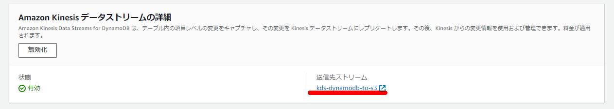

DynamoDBからkinesis firehose経由でS3に出力
Kinesis Data Streamsの作成
Kinesis Data Firehoseの設定
DynamoDB側の設定
aws dynamodb create-table --table-name 'cities' \
--attribute-definitions '[{"AttributeName":"key","AttributeType": "S"}]' \
--key-schema '[{"AttributeName":"key","KeyType": "HASH"}]' \
--provisioned-throughput '{"ReadCapacityUnits": 5,"WriteCapacityUnits": 5}'

DynamoDB側でデータ生成
aws dynamodb put-item --table-name cities --item '{ "population": { "N": "38164" }, "date_mod": { "S": "1950-6-22" }, "key": { "S": "t0924" }, "name": { "S": "足利" } }'
aws dynamodb put-item --table-name cities --item '{ "population": { "N": "72391" }, "date_mod": { "S": "1950-8-30" }, "key": { "S": "t0925" }, "name": { "S": "日光" } }'
aws dynamodb put-item --table-name cities --item '{ "population": { "N": "56148" }, "date_mod": { "S": "1950-9-7" }, "key": { "S": "t0926" }, "name": { "S": "下野" } }'
S3側の出力（※一部抜粋）

{"awsRegion":"ap-northeast-1","eventID":"1e84f1ca-438d-4837-a6bd-aa4592be6f8a","eventName":"MODIFY","userIdentity":null,"recordFormat":"application/json","tableName":"cities","dynamodb":{"ApproximateCreationDateTime":1651495525900,"Keys":{"key":{"S":"t0926"}},"NewImage":{"population":{"N":"54148"},"key":{"S":"t0926"},"name":{"S":"下野"},"date_mod":{"S":"1950-9-7"}},"OldImage":{"population":{"N":"56148"},"key":{"S":"t0926"},"name":{"S":"下野"},"date_mod":{"S":"1950-9-7"}},"SizeBytes":104},"eventSource":"aws:dynamodb"}
関連しているかもしれない記事
- Auroraの各バージョンのサポート期間
- Aurora PostgreSQLのDB監査方式（Database Activity Streams or pgaudit？）
- サーバ側と通信するCipher suite (暗号スイート) の調査方法
- S3のパブリックアクセスに関するブロックパブリックアクセスとバケットポリシーの関係
- Amplifyを使用してCognitoテスト環境を構成する